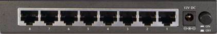
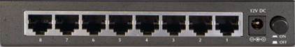

Connections to the MXP's
RX is from the MXP output and TX goes directly to the ships cable.
Click here to add the coax cables.
Click here to add the coax cables.
Next is to connect the serial connection.
This is for arbitrator switching, RX lock and GPS. This goes to the modem port on the MXP.
(Note: The TX mute is not done by the MXP it's controlled by the arbitrator only)
Click here to add the serial modem cable
Next is to connect the Ethernet cables.
This is for the web interface, ROAM or openAMIP if used.
Click here to add the Ethernet cables
For MXP B, connect in the same way but use the B ports instead on the arbitrator.
Block output under interfaces MUST be set to Polarity Hi in both MXP's. This CLI command should be entered in to each MXP via the CLI page. set antenna dual_mode on

 
